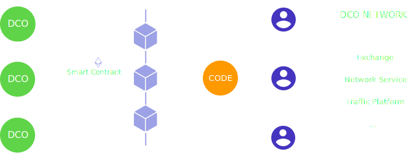
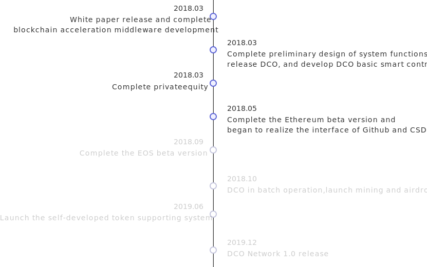

Coding is Mining
SUBSCRIBE
Copyright © 2018 DCO Network. All Rights Reserved.
Coding is Mining
WhitepaperCODE improve how we cooperate
In a centralized organization, individuals generally establish employment relationships with central organizations by signing employment agreements. The establishment and termination of relationships have created many obstacles, and individuals are not allowed to serve other organizations during the employment period, and lose their freedom. On the other hand, Centralized organizations have higher requirements on time and geography, which limits individual participation.
The introduction of CODE coin * enables individuals to establish relationships through CODE coins and record them in blockchains with smart contracts. Individuals can freely determine the start and end of collaborative relationships, and can establish any number of collaborative relationships at the same time, with high degrees of freedom; Moreover, CODE coins can organize individuals from different regions and meet the requirements, carry out project collaboration, and optimize resource allocation.
We refer to this organization based on CODE coins as the Distributed Collaboratiove Organization (DCO).
*Note: CODE currency is the basic currency of the transaction medium, value measurement, debt settlement, value storage, investment tools and contract deferred payment within the entire DCO Network.
How CODE works in DCO
DCO Network will provide a range of decentralized infrastructure, including tools, services and smart contracts, making it easy to create, manage, and operate a distributed collaboration organization and each distributed collaboration organization can create its own governance system and specific rules.
The blockchain provides honest and trustworthy accounting technology. The DCO is created through smart contracts. The information is fully chained. Users can obtain sufficient information to decide to join or withdraw from a DCO. Investors can also obtain sufficient information to decide whether Carry out project investment.
Each distributed collaboration organization can create its own “DCO Token” (DCOT) and other High Order Token (HOT), using the pass to make a fair measure of each individual's contribution. conduct strong economic incentives. Realize the benefits and make a fair distribution.
DCO Network will provide trading capabilities to match DCO coins to any DCOT transaction. As the base currency of the platform, DCO currency will be linked to the mainstream encrypted digital currency exchange and establish exchange rate links with digital currencies such as Bitcoin and Ethereum.
DCO NETWORK IS THE PLATFORM FOR DCO
At the product service level, DCO Network will combine the third-party mature SAAS service to provide a pass-through management SAAS service for DCO to help creative entrepreneurs to unite their communities.
At the management tool level, DCO Network will provide DCO with a variety of convenient organization management tools, such as member management, certificate management, transaction tracking, data analysis, etc., to help DCO better complete organizational operations.
At the basic protocol level, DCO Network will provide complete infrastructure such as: DCO creation and management protocols and APIs; Token creation, distribution, management protocols and APIs; DCO-inspired smart contract templates.
DCO NETWORK HELP DCO TO BUILD TRUST
Learning, absorbing and precipitating new technical knowledge is a process of constant self-renewal for every developer. DCO Network expects to create a knowledge map through rewards, and encourage developers to create organizations that collaborate to organize knowledge maps, learn documents, share learning experiences, and build their own evidence-based incentives.
The DCO Network will guide the traditional community organizations to carry out the certification based on the platform, assist the community to use the pass to formulate governance rules, encourage users to spread participation, and continue to motivate users to promote high-quality output. The community that has a significant effect on the census is motivated by converting the organization’s high-level pass to DCO.
DCO Network hopes to help the multi-party to build trust and organization by providing comprehensive basic services, so that developers scattered around the world can form a powerful, highly resource-optimized and efficient collaborative team around specific goals. Each person's contribution is quantified and the benefits are distributed in real time and fairly.
Roadmap
Coding is Mining